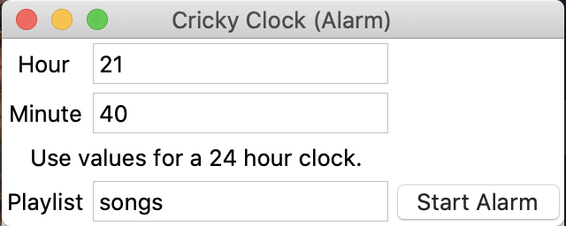
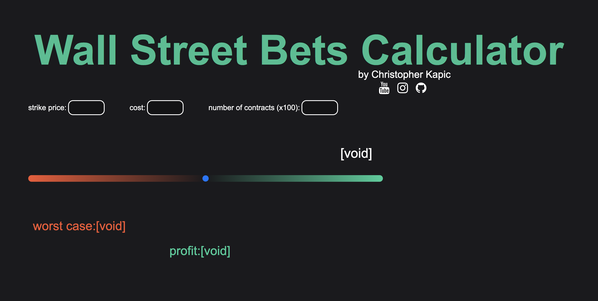

Cricky Clock
After making Cricky Calculator, I wanted to try something else. One
thing that has always annoyed me is when I use a song that I like for my
alarm and I get tired of hearing it as an alarm, so I lost my enjoyment
of the song.
[Click for more]

Rotate.zone
Rotate.zone was a day project I created to help Fortnite players
calculate the time it takes to run to the next zone. It uses a voice
recognition API and a TTS API and acts as a voice assistant. Overall, it
is not feature rich, but it does work. Try going to the website and
saying the command "Rotate 500."

TickerTab
TickerTab is a project that I am currently working on. It is an options
pricing calculator that uses a prediction for the underlying stock to
determine the price of an option. As of now, I only have a simple
prototype, but it is something that I plan on improving throughout the
summer.